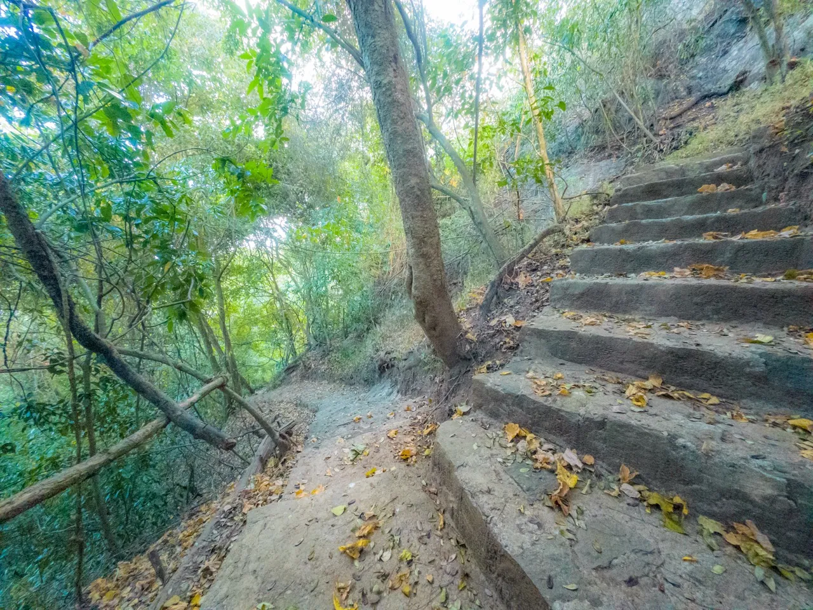
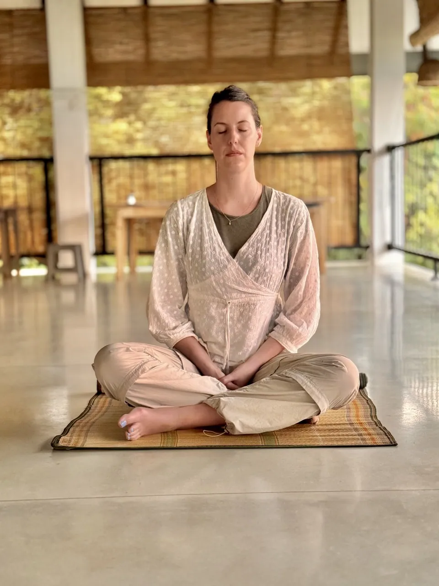
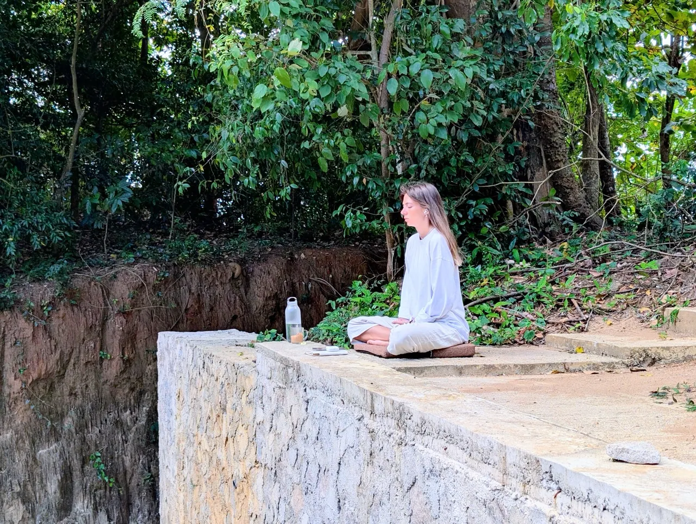
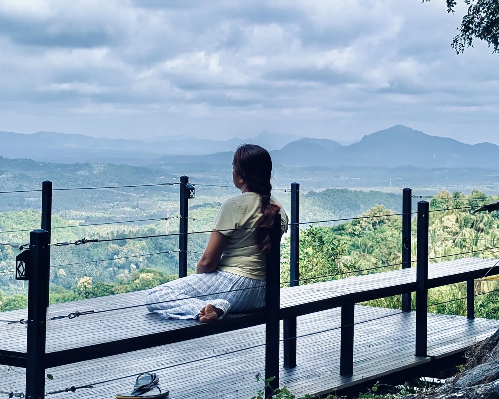
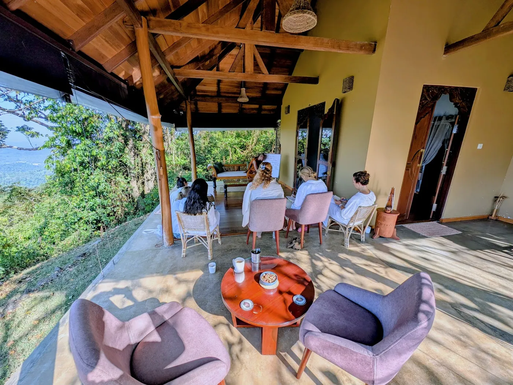
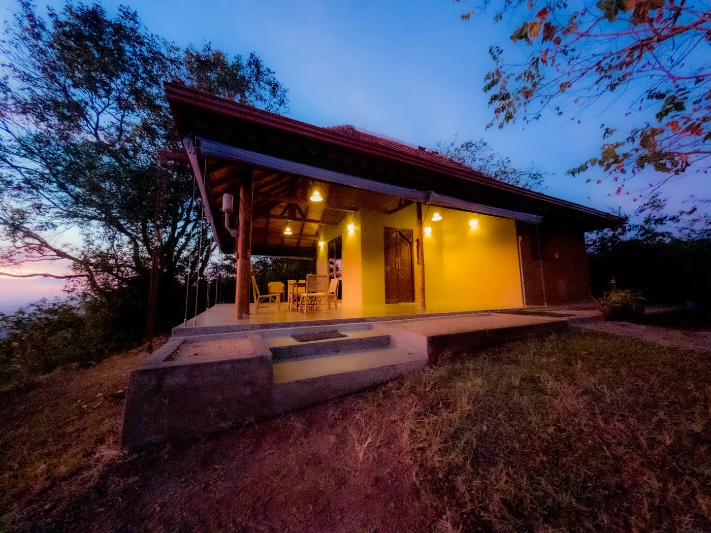
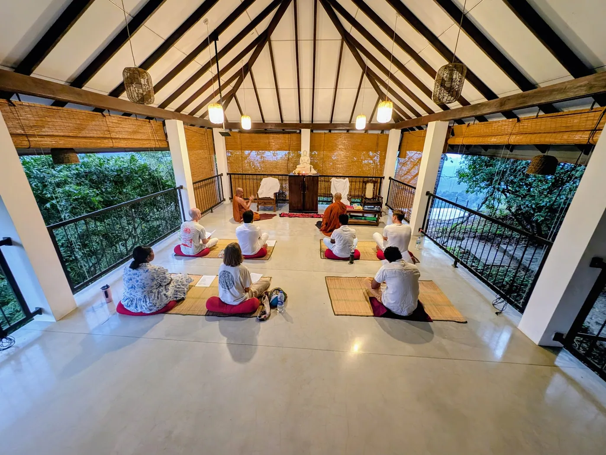

02වැඩසටහන
වැඩසටහන පිළිබඳව හැඳින්වීම
ථෙරවාද බුද්ධ දර්ශනයෙහි කෙළවර දර්ශනය වූ නිර්වාණය අරමුණු කරගත්, ඒ සඳහා සැකසූ ක්රමානුකූල මාර්ගයක භාවනා යෝගීන් ගමන් කරවීම පිණිස නේවාසික භාවනා වැඩසටහන් තුළ පුහුණු කරවයි.
01ආරණ්ය සේනාසනය
රිදීකන්ද ආරණ්යය සේනාසනය, මාතලේ දිස්ත්රික්කයේ යටවත්ත ප්රාදේශීය ලේකම් කාර්යාලට අයත් උඩස්ගිරිය ග්රාමයට යාබදව ඉතා මනරම් කඳු මුදුනක පිහිටියා වූ භාවනා යෝගීන්ගේ තෝතැන්නකි. එහි වූ සෞම්ය දේශගුණය, සීතල සහ සෙවණ, භාවනා යෝගී භික්ෂුන් වහන්සේලා මෙන්ම, උපාසක උපාසිකාවන්ගේ සිත මෙන්ම කයටද ගෙන දෙන්නේ සුවපත් භාවයකි.

මිහිඳු මහ රහතන් වහන්සේගෙන් ඇරඹුණු ලක්දිව ථෙරවාද බුදුසසුන අද දක්වා නොනැසී පවත්වා ගෙන එන ගමනේදී, වළගම්බා රජ සමයේ බැමිණිටියා සාය නම් අතිශය දරුණු සාගතය නිසා එතෙක් වාචෝද්ගතව පවත්වාගෙන ආ තෙවළා බුදුවදන අභාවයට යා නොදී, කඳු රටට වැඩම කොට පෙළ දහම වාචෝද්ගත කොට අස්වසමින් රැක ගැනීමට දිරි දැරූ ඒ මහා සංඝරත්නය, මාතලේ අළු විහාරයේ දී ධර්මයේ චිරස්ථිතිය පිණිස ත්රිපිටකය ග්රන්ථාරූඪ කළහ. එවන් සංඝ පරපුරකින් පෝෂණය වූ භික්ෂු පරම්පරාවක් ලෙස උත්තම ශාසනයේ ප්රතිපත්තිගරුකව කටයුතු කරමින් ආරණ්යය වාසීව වැඩසිටින භික්ෂුන් වහන්සේලා මෙම රිදීකන්ද ආරණ්යය සේනාසනය තුළ වැඩසිටියි. තමන් වහන්සේලාගේ අධ්යාත්මික ගුණ වගාවන් වර්ධනය කරගනිමින්, ධර්ම මාර්ගය තුළ ගමන් කරන භාවනායෝගීන්ටත් මාර්ගෝපදේශනය ලබා දෙමින්, බුද්ධ දර්ශනය මෙරට මෙන්ම ජාත්යන්තරය තුළද ප්රචලිත කිරීමේ වටිනා ශාසන මෙහෙවරයක වර්තමානය තුළ කටයුතු කරමින් වැඩ වාසය කරයි.
ත්රිපිටක ගත ධර්ම විනය මනාකොට අධ්යයනය කොට එය ප්රායෝගිකව ක්රියාත්මක කරමින්, බුද්ධ දර්ශනයේ ඉදිරිපත් කරන උතුම් ඵල නෙළාගැනීමේ ක්රමානුකූල මාර්ගයක ගමන් කිරීම පිණිස රිදීකන්ද ආරණ්යය සේනාසනය ධර්මකාමීන්ට මාර්ගෝපදේශනය ලබා දෙයි. බුද්ධ දර්ශනයේ හර ධර්මතා, සිද්ධාන්ත මනා කොට විවරණය කොට ලබා දෙන්නා වූ ධර්ම දැනුම, ප්රායෝගිකව භාවනා කර්මස්ථානයන් නිර්දේශ කරමින් ප්රත්යක්ෂ අවබෝධයන් කරා කෙනෙකු ගෙන ඒම රිදීකන්ද ආරණ්යය සේනාසනයෙහි සුවිශේෂීත්වයයි. ප්රත්යක්ෂ අවබෝධයන් සඳහා උපකාරක ධර්මතා වූ සමථ සහ විදර්ශනා භාවනා දර්ශනයන්ගෙන් සමන්විතව එක් එක් භාවනායෝගියාගේ වර්ධනය මත පදනම් වූ ඉගැන්වීම් සහ මාර්ගෝපදේශයන් ලබා දීමෙන්, නිවැරදිව පියවරෙන් පියවර කෙනෙකුට ආර්ය මාර්ගයේ ගමන් කිරීමට අවකාශ සලස්වයි.

02වැඩසටහන
ථෙරවාද බුද්ධ දර්ශනයෙහි කෙළවර දර්ශනය වූ නිර්වාණය අරමුණු කරගත්, ඒ සඳහා සැකසූ ක්රමානුකූල මාර්ගයක භාවනා යෝගීන් ගමන් කරවීම පිණිස නේවාසික භාවනා වැඩසටහන් තුළ පුහුණු කරවයි.

මූලික අදියර ලෙස භාවනා යෝගියාගේ චිත්ත ඒකාග්රතාවය වර්ධනය කරවීම සඳහා විවිධ සමථ භාවනා කර්මස්ථානයන් නිර්දේශ කරමින්, ඒ ඔස්සේ විදර්ශනාව සඳහා අවශ්ය මූලික චිත්ත ඒකාග්රතාවය තහවුරු කරවීම සිදුකරයි.

ඉන්පසු ආර්ය මාර්ගයේ පිළිවෙළින් උදය-වය, භංගය, ආදීනවානුපස්සනා ආදී වූ ඥානයන් ප්රත්යක්ෂ කිරීම උදෙසා අවශ්ය ධර්ම දර්ශන ඉගැන්වීම සහ ඊට අදාළ වූ පෞද්ගලික කර්මස්ථානයන් නිර්දේශ කරමින්, එය ප්රායෝගිකව වැඩීම පිණිස මාර්ග උපදේශනය විදර්ශනා භාවනා වැඩසටහනේ සිදුකරයි. ක්රමයෙන් ධර්ම මාර්ගය ඔස්සේ පරිණත වන භාවනා යෝගියා ගැඹුරු ධර්ම දර්ශන අධ්යයනය කරමින් සම්මා ඥානයන්ගේ ප්රත්යක්ෂතාවයත් එමගින් අත්දකින ජීවිත අවබෝධයත් මෙම විදර්ශනා භාවනා වැඩසටහන තුළින් ළඟා කරගනියි.

ඒ සඳහා මුල සිට අද දක්වා ශ්රී සද්ධර්මය, ත්රිපිටක ගත සූත්ර, අභිධර්මය සහ විනය තුළින් උගන්වමින්, එහි ප්රායෝගික දර්ශනයන් කර්මස්ථාන මඟින් වැඩීම සඳහා මාර්ගෝපදේශයන් ලබා දීම සිදුකරයි. ගුරුවරයා සමඟ ළඟින් ඇසුරු කිරීමටත් ඒ තුළින් ධර්ම ගැටළු සහ ප්රායෝගික ගැටළු නිරාකරණය කර ගැනීමටත් නේවාසික භාවනා වැඩසටහන සම්බන්ධ වන භාවනායෝගීන්ට අවස්ථාව හිමිවේ.
04වෙන්කරවා ගැනීම
අපි ප්රධාන වශයෙන් සෑම මසකම කලින් සැලසුම් කළ දිනවල සත් දින සමථ සහ විදර්ශනා භාවනා වැඩසටහන පවත්වනු ලබයි. තෝරාගත් දිනවල කෙටි කාලීන වැඩසටහන් වලට ද සම්බන්ධ විය හැක. ඉඩකඩ සීමිත බැවින් කලින් දින වෙන්කරවා ගැනීම සුදුසුය.
05නවාතැන් සහ දෛනික ජීවිතය

ආරාම සංස්කෘතියට අනුකූලව, ආරාමය මගින් පූර්ණ උදෑසන සහ දහවල් දානය ලබා දෙන අතර, සවස් කාලය සඳහා සැහැල්ලු සුප් වර්ගයක් හෝ කැඳ වර්ගයක් ලබා දෙනු ඇත.

සහභාගිවන්නන් තමන්ට අවශ්ය දෑ පිළිබඳව ස්වයංපෝෂිත විය යුතු අතර, තමන්ගේම තුවා සහ පිරිසිදු කිරීමේ ද්රව්ය (සබන්, ශැම්පු, දත් බෙහෙත්) රැගෙන ඒමට කාරුණික වන්න.

නිශ්ශබ්දතාවය රැකීම මෙම වැඩසටහනේ මූලික අංගයකි. නියමිත නිශ්ශබ්ද වේලාවන්හිදී සහ භාවනා වාරයන්හිදී නිශ්ශබ්දතාවය අනිවාර්යයෙන්ම සුරැකිය යුතුය.
06ආචාර්ය

සේනාධිපති · ප්රධාන කම්මට්ඨානාචාර්ය
අති පූජ්ය විද්යාවේදී රාජකීය පණ්ඩිත කම්මට්ඨානාචාර්ය අනුරාධපුර අරියජීව ස්වාමීන් වහන්සේ, අස්ගිරි මහා විහාරයේ දී අස්ගිරි මහා විහාර පාර්ශවයේ අනුනායක ආණමඩුවේ සද්ධර්මකීර්ති ශ්රී රතනපාල බුද්ධ රක්ඛිත ධම්මදස්සනාභිධාන නාහිමිපාණන් වහන්සේගේ ශිෂ්යයකු ලෙස උපසම්පදාධූරයට සපැමිණ, වර්තමානයේ කුරුණෑගල කොන්පොල ශ්රී අභිනවාරාමය පුරාණ ටැම්පිට විහාරය, කහහේන ශ්රී අභිනවාරාමය විහාරය සහ උඩස්ගිරිය රිදීකන්ද ආරණ්යයෙහි අධිපතීත්වය හොබවමින් ශාසන මෙහෙවර සිදුකරයි.

භාවනා උපදේශක
දශකයකට ආසන්න කාලයක භාවනා පුහුණුවක් සහ පළපුරුද්දක් ඇති පූජ්ය හෝමාගම රේවත ස්වාමීන් වහන්සේ, සිතේ ගැඹුරු ස්වභාවය, සංඥාව (හැඟීම් දැනීම්) සහ භාවනාව පිළිබඳ ගවේෂණය කිරීම සඳහා තම ජීවිතය කැප කර ඇත. ස්යාමෝපාලි මහා නිකායේ කෝට්ටේ ශ්රී කල්යාණි සාමග්රීධර්ම මහා සංඝ සභාව යටතේ උපසම්පදාව ලැබූ උන්වහන්සේ, පූජ්ය අලකොලගල ඥාණරතන ස්වාමීන් වහන්සේ සහ පූජ්ය අනුරාධපුර අරියජීව ස්වාමීන් වහන්සේගේ මඟපෙන්වීම සහ ශික්ෂණය යටතේ පුහුණුව ලබා ඇත.
08ව්යාපෘති
සම්බන්ධවීම
රිදීකන්ද ආරණ්ය සේනාසනය ආගන්තුක භික්ෂුන් වහන්සේලා, මෙහෙණින් වහන්සේලා, උපාසක, උපාසිකාවන් සඳහා පිළිගන්නා අතර, පහත අරමුණු සාක්ෂාත් කිරීම සඳහා ආරණ්යයට පැමිණිය හැක.